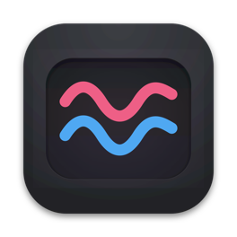

LI-05 · Free · macOS
Downloading Lock In…
Version 0.11.0 is on its way — your download starts automatically. Signed and notarized for macOS. Open the disk image, drag Lock In to Applications, then open it and drop in your lead vocal.
Download didn't start? Click here
Mac app · macOS 12+ · Apple silicon & Intel